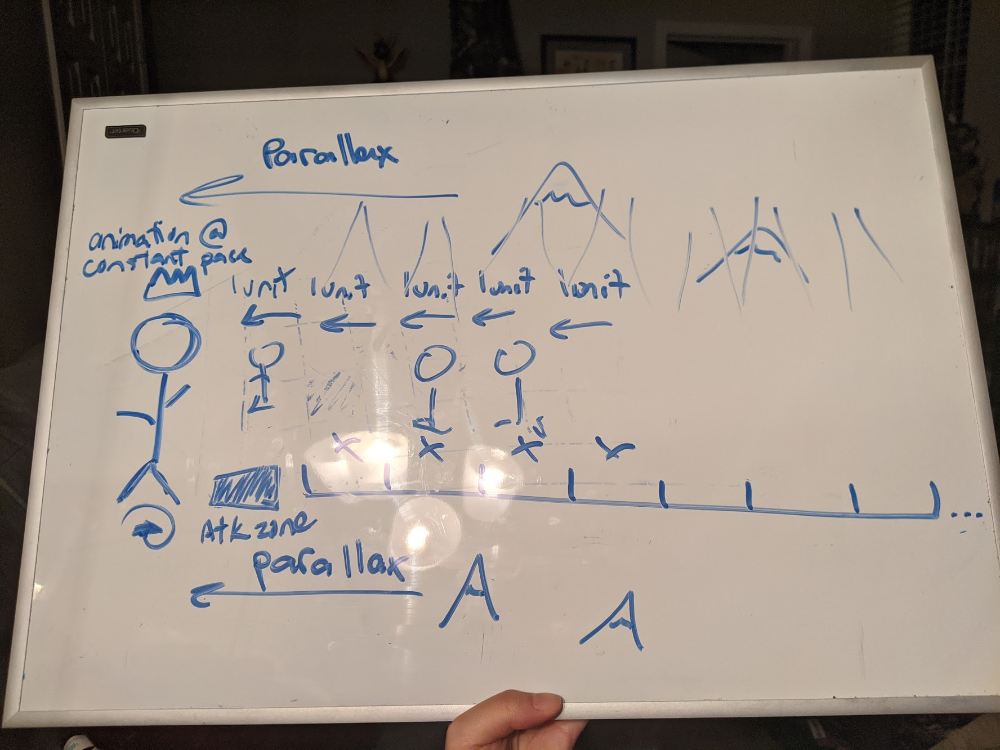
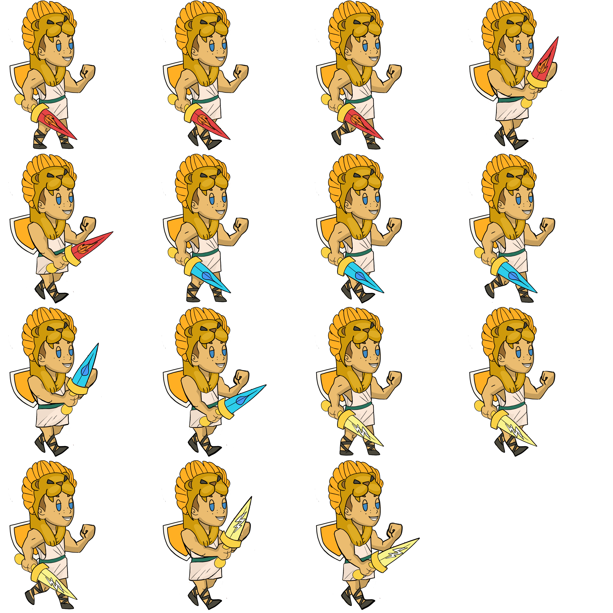

GMTK Game Jam 2020
Game Created: Oh My God
ROLE
Game Designer, Project Management
TEAMED UP WITH
Anthony Melo, Software Developer
Yu-Jen Lin, Software Deverloper
Diana Castillo, 2D Artist
Lauren Heyen, 2D Artist
Brock Norfleet, 3D Artist
Dwain 'Tino' South, 3D Artist
GMTK Game Jam
The Game Maker's Toolkit (GMTK) Game Jam is a 48 hour game making marathon, focused on design, mechanics, and clever ideas. The games submitted are ranked against the following criteria: fun, originality, and presentation.
This year's jam theme was: Out Of Control.
TIMELINE
Jul 10 - Jul 12, 2020
Our Game - Oh My God
'Oh My God' is a single player Rock-Paper-Scissors puzzle game built for WebGL and also playable through PC and Mac as a standalone download.
Game Narrative
Play as Zeus to help Hercules become the hero he was meant to be. The Elemental Titans are terrorizing different levels of the world and Hercules must learn to control his own elemental powers as he battles the Titans to restore peace.
View Submission + Play The Game Here!jam overview
I Was The Dog Walker And Loved It
I Was The Dog Walker And Loved It
I thoroughly enjoyed this game jam as I took on a greater role with the game's design. I also played to my strengths as a communicator, ensuring our larger team, some virtual and in other timezones, had the most up-to-date information with the game's progression across all art, design, and software. I also happened to churn out the very last minute UI!
approach
A Unique Spin On A Classic
A Unique Spin On A Classic
Our team brainstormed a total of 12 unique ideas centered around the 'Out Of Control' theme. We decided on a platformer-style game where the protagonist's mechanics were out of control because we believed it could be a unique spin to what most players are used to focusing on. I really liked this backwards theory! To achieve this using our initial idea, the game antagonists would need to be playable in some way.
We decided on a mechanic where the antagonist's position towards the protagonist needed to favor the protagonist in order for the protagonist (and the player) to win. We simplified the game further to essentially become a themed version of "rock-paper-scissors".
Fire defeats Electricity, Electricity defeats Ice, Ice defeats Fire.
process
Coordination
Coordination
This game was developed during the COVID-19 pandemic, so most of our development time was actually spent physically apart from each other. We also had 1 friend working form a timezone 3-hours apart. Our team utilized Google Docs, Google Drive, and Discord as our primary sources to communicate and share documents.

Our initial brainstorm meeting was the only time we had 3+ members in the same space.
Game Design
The majority of the first first half of the game jam was myself and our software developers working to define and streamline the game logics. This involved several Google Documents and being very clear about our intentions.
Initially the game had the antagonists in lanes coming towards the game protagonist. After drawing out our ideas for how that would work, it quickly became obvious that the game was too complicated so we KILLED idea narrowed it down to a single enemy highway.

An initial drawing of the game design with 2 lanes. Do you love my lovely stick figures?
We then moved on to decided the specific game logic for winning and losing with the help of matrices.
This was our initial game logic definition for the Win/Lose states of the game.
My whiteboard drawings for refining the game logic.
This was the final version of the Win/Lose Mechanism for the game in the form of a Matrix and what correlated to the animations needed.
Level Design
The whiteboard was my best friend. I made several drawings and presented them to all our team members to check if they understood what I was explaining. A litmus test. When it wasn't clear, I went back to the drawing board and we settled on the version that everyone understood and could continue developing assets or code for.
My drawing of the enemy highway in the envrionment our artists were setting up.

My drawing of the player interaction with the game characters.
Once the concept of the levels were solidified and the programming was futher underway, I actually designed each of our 3 levels. I made several versions to user test the number of units to display on screen, level difficulty, and to ensure that the levels were possible to complete using Google Sheets.
My experimental level designs.
Showing the enemy highway level in concept.
Implementatin of my enemy highway initially looked like this.
Interaction Design
This was a quick interaction animation I created with my team's art assets when we realized Players couldn't tell what their actions were in the game.

Player clicking interaction.
Sprite Sheets and UI
I created the game's UI quickly in Sketch. I also helped to create the game's sprite sheets from the assets I was receiving from our artists to streamline getting them imported into the game.
The game's UI sprite sheet.
Our final sprit sheets for all the characters and levels.
Hercule's Level 3 Sprite Sheet.
Testing
Unfortunately with the time crunch we didn't get to test the game our as much as we liked, but luckily we played enough to know that the game was beatable.
Testing the game's levels at a stage when final assets were not fully implemented yet.
Final Product
It Works!
It Works!
It was a pretty proud moment when the build came together and actually functioned as we invisioned. The last of our time was put to compiling the final product for submission. Pretty happy with the outcome!
The final working build before compiling for submission.
Reflection
This was my second official game jam and I had just as much fun as the first. I'm happy to have participated more thoroughly in the game's design. Time management was tough with the chosen direction but we pulled through with enough polish in every aspect of the game to be proud of what we pulled out!